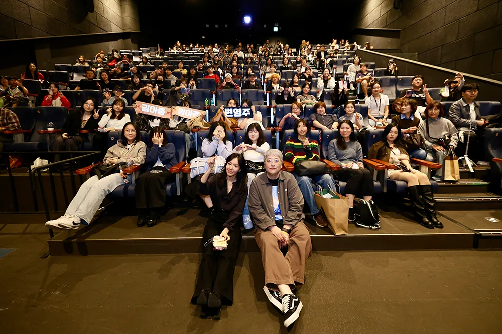
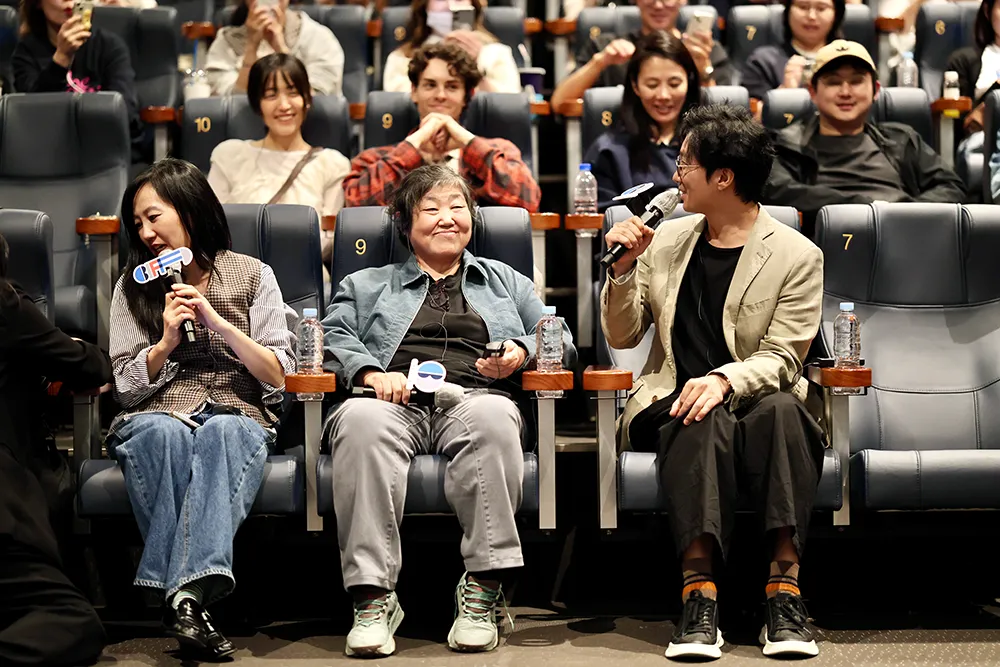
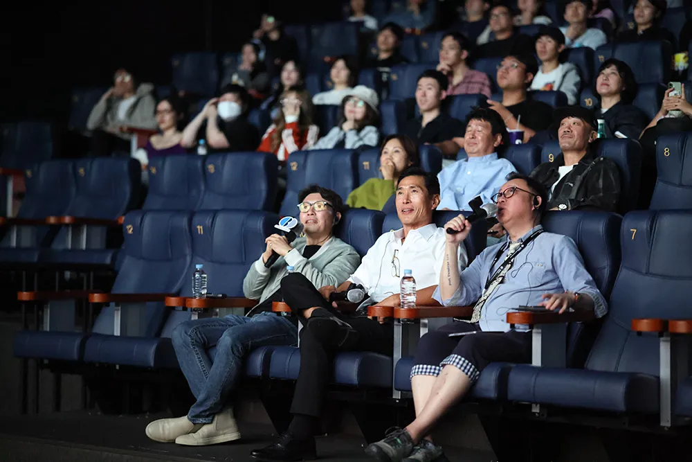
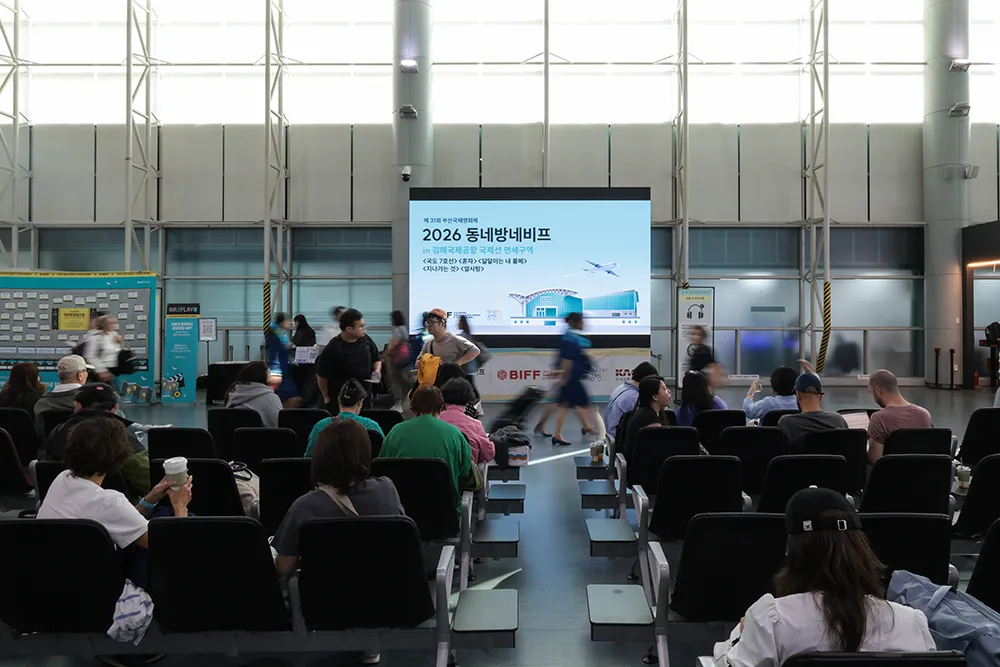

부산대 차 없는 거리 내 중앙사거리에서 시민들과 함께한 ‘동네방네비프’
도시 전체와 호흡하는 축제로
커뮤니티비프와 동네방네비프
2026-10-19
글 _ 이우빈(씨네21 기자)
사진 제공 _ 부산국제영화제
-
관객이 프로그래머로… ‘커뮤니티비프’, 시민 참여 1.7배 증가
-
시장부터 공항까지… 부산 곳곳을 영화관으로 바꾼 ‘동네방네비프’
-
커뮤니티비프·동네방네비프, 지역과 상생하는 ‘일상의 영화제’ 지향
부산국제영화제는 아시아와 세계로 뻗어 나가되, 부산이라는 지역성도 잃지 않으려 한다. 그 중심엔 커뮤니티비프와 동네방네비프가 있다. 올해 9년째를 맞은 커뮤니티비프는 관객 주도형, 지역 중심의 축제다. 센텀시티의 영화의전당 인근에서 펼쳐지는 부산국제영화제 프로그램이 전통적인 영화제 상영의 형태를 띠고 있다면, 커뮤니티비프는 원래 부산국제영화제의 주 무대였던 남포동을 기점으로 독특한 프로그램들을 펼친다. 동네방네비프는 부산 지역 곳곳은 물론이거니와 부산 인근의 교외, 서울까지 상영 영역을 넓혀 영화제의 문화적 저변을 넓히는 중이다.
올해 10월 8일부터 11일까지 문을 연 커뮤니티비프의 프로그램 이벤트 및 부대행사엔 지난해 대비 1.7배가 넘는 2만 9천511명의 시민이 찾아왔다. 이 중 극장에서 상영한 총 69편의 관객 수는 5천186명으로 집계됐다. 올해 1분기 부산에는 100만 명 이상의 해외 관광객이 방문했는데, 커뮤니티비프와 동네방네비프가 이러한 해외 관광객, 지역 주민들에게 축제의 허들을 낮추고 쉽고 친밀하게 영화제에 접근할 수 있도록 만든다. 지역 전체, 도심 생태계와 상생하는 축제의 역할을 톡톡히 해낸 것이다. 올해 커뮤니티비프와 동네방네비프의 성과를 살피며 지역 축제로서 부산국제영화제를 다시 점검해 본다.

비프광장 야외무대에서 열린 올해 커뮤니티비프 전야제
관객이 꾸리는 커뮤니티비프, 리퀘스트 시네마
커뮤니티비프의 대표 프로그램 중 하나는 ‘리퀘스트 시네마: 신청하는 영화관’(이하 리퀘스트 시네마)이다. 리퀘스트 시네마는 2018년 기획을 시작하여 2019년부터 본격적으로 진행된 프로그램이다. 영화제 기간 전, 전국의 모든 시민이 참가하여 자기만의 프로그램을 신청하고, 영화제 기간에 상영과 부대행사를 진행한다. 올해 리퀘스트 시네마엔 역대 최대인 92개 기획 중 관객 투표와 영화제 내부의 심층 평가를 통한 18개 프로그램이 영화제에서 실현됐다.
예를 들면 이런 방식이다. 개봉 20주년의 <미녀는 괴로워>(2006)를 상영작으로 선정하여 ‘미녀는 여전히 괴로워’라는 프로그램을 열고, 주연 김아중 배우와 게스트 변영주 감독이 무대에 올라 영화에 관한 이야기를 나눈다. 이외에도 <스크래퍼>(2023)를 틀며 관객 프로그래머와 작품의 배급사 대표가 함께 영화의 비화를 나누기도 한다.
부산국제영화제 커뮤니티비프·동네방네비프 담당 정미 프로그래머는 “해가 갈수록 시민 프로그래머라는 말을 붙이기가 어색해진다. 이제 정말 여느 영화제 프로그래머 못지않은 역량을 보여 주고 있다. 올해엔 각 팀이 직접 홍보 영상을 만들어 배포하기도 하는 등 활동 반경 역시 넓어지고 있다”라는 소감을 밝혔다. 정미 프로그래머의 말처럼 영화제가 “영화인과 관객을 발굴하고 양성하는 장소”로서도 기능하는 것이다. 월드 프리미어나 화제의 신작뿐 아니라 관객이 실제로 보고 싶어 하는 영화를 기억하고 상영하며 이야기 나누는 과정에서 매해 새로운 프로그래머들이 탄생하고 있다.


리퀘스트 시네마 ‘미녀는 여전히 괴로워’(위)와
‘배우 강애심의 세 가지 인상’ 현장
거장들과의 대화, 마스터톡
영화 상영 이후 관객이 작품의 감독 및 제작진과 이야기를 나누는 토크 행사는 관객과의 대화, 게스트와의 만남이라는 이름으로 통상 치러지고 있다. 그에 비해 커뮤니티비프의 ‘마스터톡’은 아주 색다르다. 실시간 양방향 소통을 지향하는 상영회 마스터톡은 영화가 상영되는 동안 관객은 전용 앱을 통하여 실시간 코멘터리를 온라인에 공유한다. 이 코멘터리들이 스크린 우측에 동시 공개되고, 게스트로 방문한 감독과 제작진은 실시간으로 관객들의 말에 답변한다. 동시통역 기기를 활용하여 관객들이 영화에만 오롯이 집중할 수 있게도 자율성을 보장한다. “통상적인 GV의 형식을 온라인으로 확장하는 모델을 궁리하며 완성된 기획”(조원희 커뮤니티비프 운영위원장)인 것이다.
마스터톡을 기획한 정미 프로그래머는 “영화제의 인터랙티브 면모를 강화하여 관객들의 참여를 더 강하게 이끄는 목표”가 있었음을 설명했다. “영화제에 유명 감독들을 초빙하는 일이 쉽지만은 않다. 하지만 관객들이 직접 그들을 보고 싶어 하고, 그들과 이야기 나누고 싶어 한다는 점을 말하면 웬만한 창작자들은 고민 없이 행사에 참여해 준다. 누구보다 관객을 위하는 자리로서 기능한다”는 것이다. 올해엔 임순례 감독의 <와이키키 브라더스>(2001)와 류승완 감독의 <짝패>(2006)가 마스터톡의 주인공이었다. 정미 프로그래머는 “두 감독 모두 땀을 뻘뻘 흘릴 정도로 실시간 소통에 임해 주었으며, 박해일 배우 등 관계자들 역시 흔쾌히 행사에 참석해 주었다”고 기억하면서 “한 번 행사에 참석한 창작자들은 마스터톡만큼은 이후에도 꼭 참여하겠다는 의사를 밝힐 정도”라고 전했다.


임순례 감독, 박해일 배우가 참여한 <와이키키 브라더스> 마스터톡(위)과 류승완 감독, 정두홍 무술감독이 함께한 <짝패> 마스터톡
시네필 문화의 존속과 확장
커뮤니티비프의 또 다른 프로그램 ‘커비컬렉션’엔 영화·음악·출판·뉴미디어 등 매체의 경계 없이 동시대 문화의 저변을 넓히는 창작자들이 참여한다. 올해에 가장 주목받은 기획이라면 ‘1976 vs 2026: 스무살 시네필과의 대화’가 있었다. 한국의 대표적인 시네필인 김홍준 감독(한국예술종합학교 교수, 전 한국영상자료원 원장)의 지난 작품들을 틀고, 김홍준 감독이 무대에 나섰다. 함께한 이는 배급사 시네마토그래프의 이윤영 대표로 동시대 시네필들의 경향과 취향을 대표하는 역할을 맡았다.
정미 프로그래머는 “50년의 간격을 두고 영화로 소통하는 시네필들의 이야기를 듣고자 했다. 영화광으로 살다 보면 김홍준 감독님의 언급처럼 외로워지고 고독해지는 순간이 오기 마련이다. 이럴수록 서로 비슷한 동료를 발견하고 만나며 연대할 수 있는 장으로서 커뮤니티비프가 필요하다”는 기획 의도를 밝혔다. 더불어 정미 프로그래머는 “영화를 사랑한다는 고군분투에 휘말린 어느 분이든 영화 도시 부산으로 온다면 함께 모일 수 있다는 의미”를 커뮤니티비프의 가치로 강조했다.
독립영화인의 이야기를 다룬 JTBC 드라마 <모두가 자신의 무가치함과 싸우고 있다>의 주역들이 올해 커뮤니티비프 무대에 오른 일은 더욱 특별했다. 박해영 작가, 차영훈 감독을 비롯해 구교환, 오정세, 강말금 등 출연자가 함께한 야외 무대인사 및 토크 행사는 작중 영화사의 이름을 딴 파티 ‘고박필름의 밤’으로까지 이어지며 영화제의 활기를 키웠다.
동시대 영화문화의 파편화는 자명한 현상이다. 영화제가 열리더라도 과거와 같은 창작자, 관객 사이의 친밀함을 찾아보기는 어렵다. 영화제뿐 아니라 극장 중심의 오프라인 문화가 쇠퇴하면서 영화문화의 기반마저 위축되는 요즘이다. 이럴 때일수록 영화제는 시네필과 영화문화의 관여자들이 함께 엮이고 결합하며 그들의 문화를 조성할 수 있는 장소로 자리 잡아야 한다. 커뮤니티비프가 그러한 자리를 마련하고 있는 셈이다.

관객들과 만난 <모두가 자신의 무가치함과 싸우고 있다>의 주역들
동네방네비프, 도시 전체를 스크린으로
부산국제영화제의 주 무대가 센텀시티 영화의전당 일대로 옮겨진 이후, 영화제와 지역 현장의 접점이 줄어들었다는 평가가 있었다. 동네방네비프는 이러한 지점을 보완하며 부산 곳곳에서 영화제의 저변을 넓히는 중이다. 올해 동네방네비프는 10월 3일부터 15일에 걸쳐 부산 전역, 양산, 서울의 상영회를 진행했다. 극장뿐 아니라 주민들이 직접 생활하고 거니는 장소에 특설 극장을 설치하여 색다른 상영회와 행사를 펼쳤다. 올해의 무대 18곳은 강서구 김해국제공항 국제선 면세구역, 강서구 렛츠런파크 부산경남, 강서구 사덕시장·서부산영상미디어센터, 금정구 부산대 차 없는 거리 내 중앙사거리, 기장군 기장 장관청, 남구 동명대학교 본관 원형광장, 남구 BNK부산은행 본점 오션홀, 동구 168 더 데크, 부산진구 메가박스 서면대한, 북구 정이있는 구포시장, 서구 대한불교천태종 부산정법사, 수영구 도모헌, 수영구 민락수변공원, 수영구 현대 모터스튜디오 부산·F1963, 영도구 피아크 2층 오션가든, 양산시 목화당 1944, 서울시 여의도 국회의원회관 등이었다. 도심 한가운데부터 산턱에 있는 사찰까지 부산의 곳곳이 영화관으로 변했다.
다양한 장소에서 벌어지는 행사인 만큼 무대에 오르는 게스트들의 면모도 무척 다채롭다. 예컨대 수영구 도모헌(옛 부산시장 관사)에서 열린 토크엔 “시민의 정서와 삶에 다가간 부산과 영화제”를 주제로 정준희 교수, 변영주 감독, 김의성 배우, 조원희 운영위원장이 참여해 이야기를 나눴다. BNK부산은행 본점 오션홀에서는 고(故) 안성기 배우의 69년 연기 인생을 회고하기 위해 김홍준 감독, 이명세 감독, 정경순 배우가 모였다.
동네방네비프는 지역 기관, 단체들과의 협업도 이어 가고 있다. 올해에만 지역 시장상인회, 청년센터, 청년 스타트업, 대학교, 상권활성화사업, 도시재생사업, 지자체 등과 프로그램을 함께하며 지역 축제로서의 역량을 키웠다. 동네방네비프의 전체 예산 중 영화제 예산이 차지하는 비중은 4분의 1에 불과하다. 그 외에는 지역사회의 협력과 후원으로 예산을 확보하며, 지역 단체에 부담스럽지 않은 수준의 사업비로 여러 협업의 기회를 만들고 있다. 커뮤니티비프도 부산시사회복지협의회, 부산과학문화거점센터, 부산관광공사, 부산문화재단, 동서대학교 임권택영화예술대학, BNK부산은행아트시네마 등과 교류 및 협력하고 있다.





위에서부터 동네방네비프가 진행된 구포시장, 민락수변공원, 김해국제공항 국제선 면세구역, 168 더 데크, 피아크 2층 오션가든
지역 영화인의 요람, 진정한 영화 도시
한편 동네방네비프는 지역 영화인들의 소통을 도모하고 새 지역 영화인을 양성하는 요람으로도 작동하고 있다. 올해로 6년째를 맞은 영화 제작 프로젝트 ‘누구나영화만들기’를 통해서는 기존의 지역 영화인들이 멘토 역할을 하고, 지역의 새싹 영화인들이 멘티로 참여하여 영화제 기간 전후로 직접 영화를 만든 뒤 상영하는 과정이 이뤄진다. 여기에도 지역 각지의 문화예술 단체들이 함께한다. 올해에만 곰마실픽처스(양산시지역활성화지원센터 후원), 일사분란(세이브더칠드런코리아 후원), 극예술실험집단 초, 부산뇌병변복지관, 상리종합사회복지관 등이 영화 만들기 프로젝트에 함께했다. 부산의 다양한 계층에 속한 시민들과 문화 소외계층이 모여 자신들의 이야기를 단편영화로 만드는 워크숍이자 잔치로 완성됐다.

올해 부산국제영화제 ‘동네방네비프’ 리플릿
정미 프로그래머는 커뮤니티비프와 동네방네비프가 이어 가는 지역 상생의 의미를 “일상의 영화제”라는 말로 압축했다. “영화제의 무대가 특정 위치로 좁혀질수록 부산 시민들은 영화제의 활력을 체감하기 어려워진다. 부산이 진정한 영화 도시가 되기 위해서는 좋은 영화를 극장에서 볼 수 있는 기회뿐 아니라, 영화제 기간 내외에도 영화라는 매체와 영화제라는 축제에 스며들 수 있는 자리가 많아져야 한다”는 것이다. 숨을 쉬듯이 자연스레 영화가 일상과 문화에 스며들게 하겠다는 커뮤니티비프와 동네방네비프. 어느새 내년 커뮤니티비프 10주년을 향해 달려가고 있다.